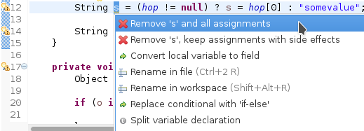

50 slides of IDE — Eclipse Con France 2015
Baptiste Mathusbatmat@batmat.net
About Me
Baptiste Mathus |
MojoHaus Committer (previously MOJO@Codehaus) |
Jenkins Contributor & Plugins Maintainer |
#automation #tooling #java #passion #oss #jenkins #maven #nexus #sonarqube
Preamble
- You will already know some of the tricks here.
- Some may even appear obvious ; for you.
Just wait for the next one then, it should not be long.
- 50 tips ⇒ 35 minutes ⇒ 42 (!) seconds per tip!
Don’t worry: slides with each tip will be provided
First one: make saving things easier (and quicker lol) than clicking in the typical place where you usually find it in applications.
CTRL-S (Yay!)
This one is very useful. And alternatively you can also click (with the mouse) on the small icon that you will generally find on the left (because this is actually customisable, I’ve been told). I like it because it prevents you from going into the File/Save Menu. It took me years to find this one. I hope you will enjoy it too!
I hope you will like it as much as I did. I hope.
Lol…
Let’s go
Let’s now get a bit more serious, only 34 minutes left…
(1/51) Abreviate package name
In Java/Appearance/abbreviate package names :
Example:
net.batmat.econ2015={DEMO}
Before |
After |
(2/51) Find any class by name
Control-Shift-T
(3/51) Browse current class methods
Ctrl-O displays all the methods of the current class
Or Inherited
Ctrl-O-O methods of the current class + parent
(4/51) Find resources
Control-Shift-R
(5/51) Use CamelCase

Or more selectively
Use space or < to stop matching
(6/51) Move/Copy lines up and down
- Alt-arrow-down to move the currently selected lines down
- Ctrl-Alt-arrow-down to copy the currently selected lines down
(7/51) Quick contextual execution menu
Alt-Shift-x will display a contextual menu.
Example: you’re in a JUnit class, just type Alt-Shift-X then T to run the tests.

(8/51) Execute previous run instead of current open file
Be explicit. Changing the code it’s natural to just run Ctrl-F11 or F11 to re-execute the previously ran test
Run/Debug/Launching/Launch Operation/Always launch the previously launched application
(9/51) Quick fix
Type Ctrl-Shift-1 (or click on the lightbulb on the left of the line) to see what the possible actions are on the current focus

(10/51) Extract Method
Select text, right click and extract the whole code block into a new method easily.
Inverse: see (11/51) Inline Method
(11/51) Inline Method
Easily inline the code of a method.
- Select method to inline/Right click/Refactor/Inline Method.
- Shortcut: Alt-Shift-I
Inverse: see (10/51) Extract Method
(12/51) Refactoring: Replacing ternary with if-else
Replace your ternary expression with an if-else (more often than not!)
Before :

After :

(13/51) Invert if/else conditions
Select the if/else to invert, and call the Quick Fix
(14/51) Generate for-loop on collection or array
Just type the collection/array, and call the Quick Fix
(15/51) Finding matching curly braces
If putting your cursor next to the curly brace isn’t enough to find the associated closing/opening one:
Use Ctrl-Shift-P
(16/51) Convert to lambda expression
Accessible through Clean Up & Quick Fix
(17/51) Typing: automatically place semicolons
(18/51) Typing: escape text when pasting into a string literal
Not enabled by default. In Java/Editor/Typing.
(19/51) Meta-Shortcut
Use Ctrl-Shift-3 on a selected item, then start typing to filter the possible actions in the Quick access menu.
(20/51) Save actions: automatic formating
Useful: be able to automatically format only the code just modified when saving the file.
See in Java/Editor/Save Actions/Format source code/Format edited lines
(21/51) Formatter: don’t touch that part (using begin/end tags)
// @formatter:off
// Some weirdly formatted source
String s2 =
"hello";
// @formatter:on(22/51) Formatter: format selectively
Select the text you want to format, and hit ctrl-shift-f as usual.
(23/51) Tweak autocompletion (aka content assist)
Typing Ctrl-Space many times shows different proposals.
Those are actually configurable (list and order of proposals).
See Java/Editor/Content Assist/Advanced.
(24/51) Favorites
Autocomplete static imports!
In Java/Editor/Content Assist/Favorites
(25/51) JSR305 annotations to help null analysis
Lets you add more typesafe-ness in your codebase (at least way more than Javadoc does!).
Beware: it’s not enforcing anything at all at runtime. This is only hints for the developer.
To go even further:
(26/51) Null analysis: one step further with Type Annotations (JSR 308)
@Nonnull List<@Nonnull String> list = new ArrayList<>();
for(String string : list) {
if(string != null ) { // Useless if hinted by Eclipse
throw new IllegalArgumentException("WTF?");
}
...
}(27/51) Annotating the package itself
Advice: annotate the package itself to define the default value for a whole package
⇒ package-info.java
|
Note
|
With regards to Null Analysis : because studies show developers actually expect parameters to be passed non null as a default, you will generally annotate the package with "Nonnull by default" and then only annotate methods where you actually expect or produce Nullable things. |
(28/51) Overwrite end of method name instead of adding
Java/Editor/Content Assist : toggle "Completion overwrites" instead of "Completion Inserts"
Can be live toggled using Ctrl key.
(29/51) Instanceof Automatic Contextualization
Inside an instanceof block, analyzes the type of the given instanceof and autocompletes with its methods:

(30/51) Type filters
In Java/Appearance/Type Filters
To filter out java.awt.* for example…
Filter out method coming from Object! (who wants to call notify()…)
(31/51) Filtering methods by categorizing them
Categorize Filtering/choosing which methods to display in the Outline using javadoc’s @category tags
(thanks Jordi Barrère).
(32/51) Step filtering
Be able to filter out stack when debugging:
- By class
- Constructors
- Getters/setters
- …
Thanks Sebastien Bordes for the reminder
(33/51) Multi-line Edit
Alt-Shift-A or the icon, as if Sublime Text invented it all ;-)
(34/51) Logical structure
Present complex/weird physical data structure in a logical way in the debugger
For reference see the official documentation or that forum discussion.
(35/51) Switch between tabs
- Ctrl-E : displays a full list
- Ctrl-F6 : Alt-tab for Eclipse
- Ctrl-Page Up/Down : easily switch between tabs
(36/51) Full screen the current view
Ctrl-M
(37/51) Remove the lines with the cursor/selection
Ctrl-D
(38/51) Working Sets
Useful to categorize projects, or packages.
(39/51) Scrapbooking, REPL
String s = String.format("%05d", 7);
s(40/51) Add to snippets
You can easily add any code block for future reuse.
(41/51) Code templates
Difference with snippets: can be variabilized.
Cf. Java/Editor/Templates
Example: JDK8 foreach
${iterable}.forEach(${iterable_element} -> {
${cursor}
});(42/51) Extensions: SnipMatch
Example: formatter on/off (cf. (21/51) Formatter: don’t touch that part (using begin/end tags))
(43/51) Breakpointing
- Conditionally
- by Hit Count
- By Exception Type
- By Class Loading

(44/51) Conditional breakpoint
Many conditions, not always well-known
Use it to debug :
System.out.println("HERE WE ARE: "+theVariable);
return false;Gotcha: in external jars (like rt.jar) without local variable table, use the arg0, arg1… placeholders for parameters, instead of the original parameter names.
(45/51) Debugging: Run to line
When debugging, you don’t have to put a breakpoint on some line to take the debugger up to it.
Just put the cursor on the line you want, then Ctrl-R (or right click/Run to line)
Thanks Olivier :-)
(46/51) Debugging: Drop To Frame
(47/51) Clean Up
(48/51) How to quick fix many issues outside of the Clean up menu
Many quick fixes are actually available, but not always through cleanup
- Go to the Problems view
- Then call… the Quick Fix
- Select the issue you want to fix
- Click select all
(49/51) JSR 305 externally defined annotations
Complementary to (25/51) JSR305 annotations to help null analysis
New in Eclipse Mars, released yesterday! (24/03/2015).
(50/51) Workspace name
Useful if you often switch between workspaces.
Under General/Workspace, you can set the workspace name field.
(51/51) Using Docker to build a clean Eclipse with wanted features
Dockerfile
FROM ndeloof/java
MAINTAINER Baptiste Mathus <batmat@batmat.net>
RUN curl http://ftp.halifax.rwth-aachen.de/eclipse//technology/epp/downloads/release/mars/R/eclipse-java-mars-R-linux-gtk-x86_64.tar.gz | tar -xvz
WORKDIR /eclipse
RUN ./eclipse -nosplash -application org.eclipse.equinox.p2.director \
-repository http://download.eclipse.org/releases/mars \
-installIUs org.eclipse.egit.feature.group,org.eclipse.jgit.feature.group
RUN ./eclipse -nosplash -application org.eclipse.equinox.p2.director \
-repository http://download.eclipse.org/releases/mars \
-installIUs org.eclipse.m2e.feature.feature.group
CMD ["cp","-R","/eclipse","/eclipse-provisioned"]Acknowlegments
- Thanks to the ToulouseJug community for providing some of the tips here
Questions?
Don’t forget to evaluate the session

/